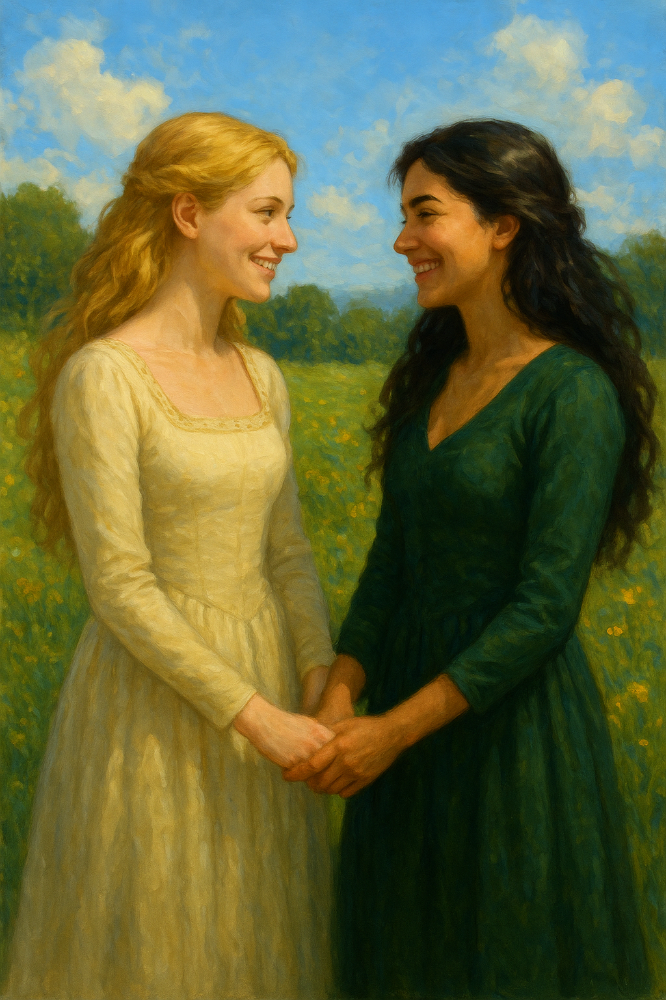

Beyond Unity Glade, where Rowan and Eleonore have watched over the Forest since long before its name was spoken aloud, there is a dower house with a walled garden — and in that garden, something older than the house itself. A lineage of women who understood, without needing it explained to them, that love grows where it is tended, and that the shape of that love is no one's to decide but the heart that holds it.
Rowan learned this from her grandmother, kneeling in a valley garden at dusk. Eleonore learned it in a midnight library, pressing dried lavender between forbidden pages. Their story — ten years in the making, carried through seasons of guarded glances and soil-stained hands and one glasshouse lit with a single lamp — is gathered here in full.
But this is not only their story. The dower house garden will receive other visitors in time: women who have not yet found their way, who will find it here, quietly, while Rowan tends the rosemary and Eleonore keeps the notebook she never quite managed to close. That is the nature of The Line of Women — not a single flame, but the carrying of one forward.
"The line of women had not ended with Rowan. It had only found new soil, and taken root, and bloomed."
— The Line of Women, EpilogueThe Keepers of the Garden

Rowan & Eleonore — the line begins hereThe Reader
The Line of Women · Book One in full · Book Two coming
Opening the book…